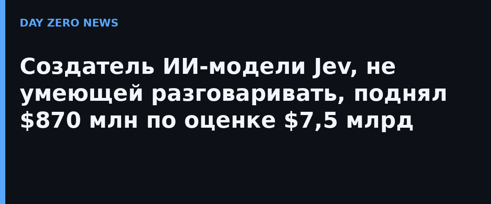

Инвесторы оценили TypeSafe AI — создателя модели Jev — в 7,5 миллиарда долларов: компания привлекла около 870 миллионов в раунде во главе с Andreessen Horowitz, сообщил Bloomberg 9 октября. Ещё в сентябре стартап отделался посевным раундом на 40 миллионов во главе с DCVC, а саму модель Jev представил 15 сентября в режиме раннего доступа. За несколько недель оценка выросла десятки раз.
Свою идею авторы называют «System One» — по аналогии с быстрым интуитивным мышлением из книги Даниэля Канемана. Jev не пишет сочинения и не ведёт чат: он принимает на вход произвольные данные и набор вопросов с заранее заданными вариантами ответов, а возвращает типизированные решения с откалиброванными вероятностями. В официальном анонсе разработчики заявляют, что на таких задачах Jev сопоставим по интеллекту с обычными языковыми моделями, но на два порядка быстрее и эффективнее — и не способно галлюцинировать, потому что свободный текст не генерирует вовсе. Метод обучения авторы называют RLCD: обучение с подкреплением на откалиброванные решения.
Сооснователь Diogo Almeida — выходец из OpenAI, где он участвовал в работах по RLHF и InstructGPT, вставших в основу ChatGPT. Он уверен, что разговорные модели — не главный путь к автоматизации: программному обеспечению нужны не красноречивые ответы, а быстрые проверяемые решения. На этом Jev и играет — документопоток, риск-решения, конвейеры ИИ-агентов, где важны латентность и честная вероятность. Wall Street Journal отмечает, что вокруг модели уже появляются подражатели и разговоры о реальной альтернативе LLM.
Все громкие характеристики — скорость «на два порядка», «не галлюцинирует» — это заявления самой компании из анонса; независимых бенчмарков на публике пока нет.